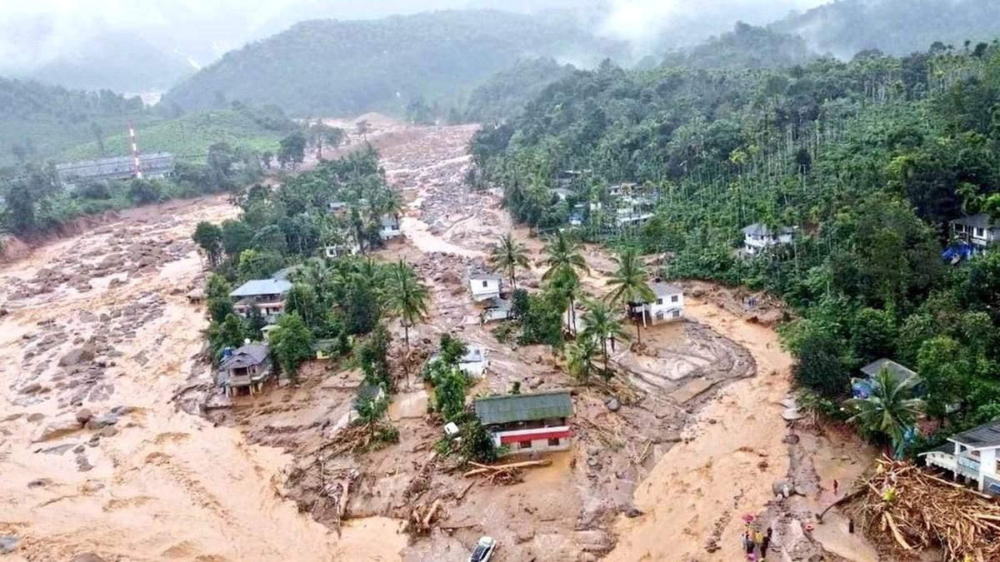

BENGALURU, 30 JULY 2024, TUESDAY
64 killed, over 100 feared missing in Kerala hill station; relief operations delayed Destroyed houses, swollen water bodies and broken branches of uprooted trees dot the high-range villages of Wayanad, rocked by massive landslides. Over 50 people have died in the landslides following torrential rain on July 30 morning, local authorities confirmed.  Prime Minister Narendra Modi announced an ex-gratia of ₹2 lakh for the next of kin of the deceased in the landslides that hit Kerala’s Wayanad.
64 killed, over 100 feared missing in Kerala hill station; relief operations delayed Destroyed houses, swollen water bodies and broken branches of uprooted trees dot the high-range villages of Wayanad, rocked by massive landslides. Over 50 people have died in the landslides following torrential rain on July 30 morning, local authorities confirmed. Prime Minister Narendra Modi announced an ex-gratia of ₹2 lakh for the next of kin of the deceased in the landslides that hit Kerala’s Wayanad.
64 killed, over 100 feared missing in Kerala hill station; relief operations delayed Destroyed houses, swollen water bodies and broken branches of uprooted trees dot the high-range villages of Wayanad, rocked by massive landslides. Over 50 people have died in the landslides following torrential rain on July 30 morning, local authorities confirmed. Prime Minister Narendra Modi announced an ex-gratia of ₹2 lakh for the next of kin of the deceased in the landslides that hit Kerala’s Wayanad.